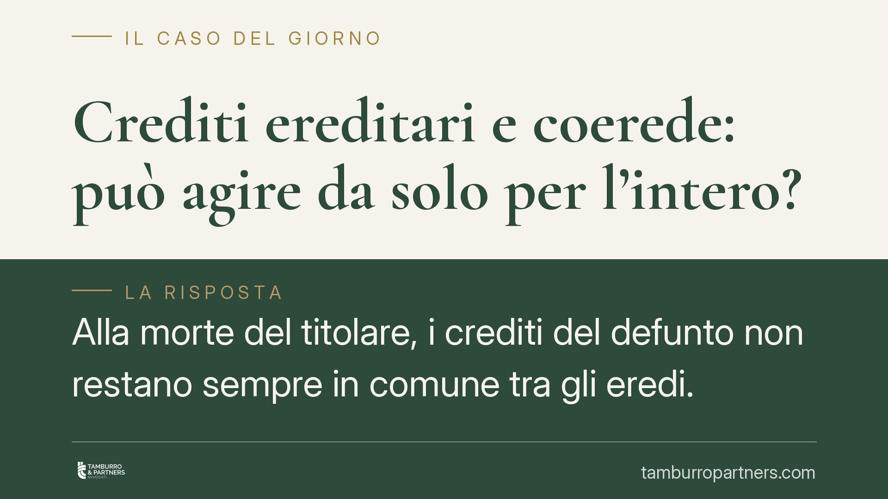

Crediti ereditari e coerede: può agire da solo per l'intero?
Alla morte del titolare, i crediti del defunto non restano sempre in comune tra gli eredi. Le Sezioni Unite della Cassazione hanno chiarito che i crediti ereditari si dividono automaticamente pro quota, come i debiti. Capire quando il singolo coerede può agire da solo, e per quanto, evita azioni mal impostate e domande giudiziali destinate al rigetto.

Il problema: chi recupera i crediti del defunto?
Quando una persona muore lasciando più eredi, il patrimonio ereditario comprende spesso crediti: un conto corrente, un finanziamento concesso a terzi, un canone di locazione maturato, un indennizzo non ancora riscosso.
La domanda ricorrente è semplice: uno solo dei coeredi può chiedere al debitore l'intera somma, oppure ciascuno può pretendere solo la propria quota?
La risposta non è intuitiva e, soprattutto, non coincide con quella che vale per i beni materiali dell'eredità.
Inquadramento normativo
Il punto di riferimento è l'orientamento consolidato delle Sezioni Unite della Cassazione (sent. n. 24657 del 28 novembre 2007), mai smentito negli anni successivi.
Le Sezioni Unite hanno affermato un principio netto: i crediti del defunto non cadono nella comunione ereditaria, ma si ripartiscono automaticamente (*ipso iure*) tra i coeredi in proporzione alle rispettive quote, fin dal momento dell'apertura della successione.
Il meccanismo è lo stesso previsto per i debiti dagli artt. 752 e 754 del Codice civile: come i debiti ereditari si dividono tra i coeredi secondo le quote, così fanno i crediti. In sostanza, ciascun coerede diventa titolare autonomo di una frazione del credito.
Esiste un'eccezione importante: i crediti indivisibili. Quando la prestazione non è suscettibile di adempimento parziale (artt. 1314-1320 c.c.), il singolo coerede può pretendere l'intero, ma è tenuto poi a rendere conto agli altri. Lo stesso vale se tra i coeredi è intervenuto un accordo o un mandato a uno di loro per la gestione.
Cosa cambia in concreto
La distinzione ha conseguenze operative precise.
Se il credito è divisibile — ipotesi di gran lunga più frequente, come una somma di denaro — il coerede che agisce da solo può chiedere al debitore soltanto la propria quota. Non può pretendere l'intero, salvo sia munito di un titolo che lo legittimi (ad esempio un mandato degli altri coeredi).
Una domanda giudiziale con cui un singolo erede chieda l'intera somma, al di fuori dei casi di indivisibilità, è esposta al rigetto per la parte eccedente la sua quota.
Sul versante opposto, questo regime tutela il debitore: pagando a un coerede l'intera somma dovuta, senza verificare la pluralità degli eredi, rischia di dover pagare di nuovo le quote spettanti agli altri.
Un ulteriore vantaggio pratico: non è necessario coinvolgere in giudizio tutti i coeredi (nessun litisconsorzio necessario) proprio perché ciascuno agisce per la propria frazione, come parte autonoma del rapporto.
Cosa fare in concreto
- Qualifica il credito prima di agire. Verifica se la prestazione è divisibile (tipicamente il denaro) o indivisibile (artt. 1314-1320 c.c.): da questo dipende la misura di ciò che puoi esigere.
- Se il credito è divisibile, agisci per la tua quota. Richiedi al debitore solo la frazione corrispondente alla tua quota ereditaria; evita di impostare la domanda sull'intero importo.
- Per recuperare l'intero, procurati un titolo. Raccogli un mandato scritto degli altri coeredi o un accordo che ti legittimi ad agire per tutti, poi rendi conto delle somme riscosse.
- Ricostruisci le quote con documenti certi. Reperisci dichiarazione di successione, testamento o accettazione dell'eredità per dimostrare la tua quota e quella degli altri.
- Tutela la posizione del debitore in sede di pagamento. Se sei tu a dover pagare o a transigere, pretendi di conoscere tutti i coeredi, così da non pagare due volte.
In sintesi
L'idea diffusa secondo cui "il credito del defunto resta in comune tra tutti gli eredi" è giuridicamente imprecisa. I crediti ereditari si frazionano automaticamente, salvo i casi di indivisibilità o di accordo tra i coeredi.
Consigliamo di impostare ogni azione di recupero partendo da una corretta qualificazione del credito e dalla ricostruzione documentale delle quote: è l'unico modo per evitare domande giudiziali destinate a un rigetto parziale e per non esporre il debitore a doppi pagamenti.
Contributo informativo a cura di Tamburro & Partners - Avv. Giuseppe Tamburro. Non costituisce parere legale.
Ogni famiglia ha il suo equilibrio.
Separazione, divorzio, affidamento, assegno: se vuoi un confronto riservato su una specifica situazione, scrivi allo studio. Ti rispondiamo entro un giorno lavorativo.